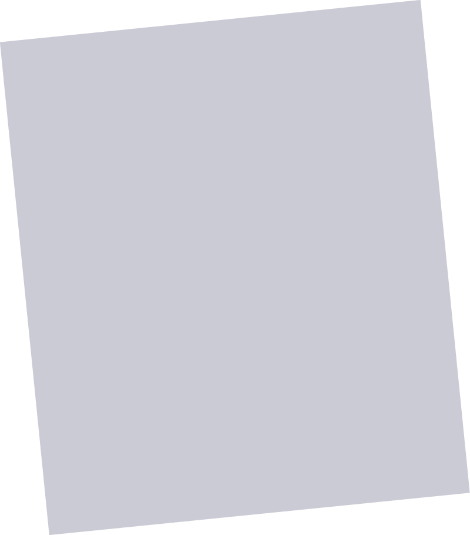
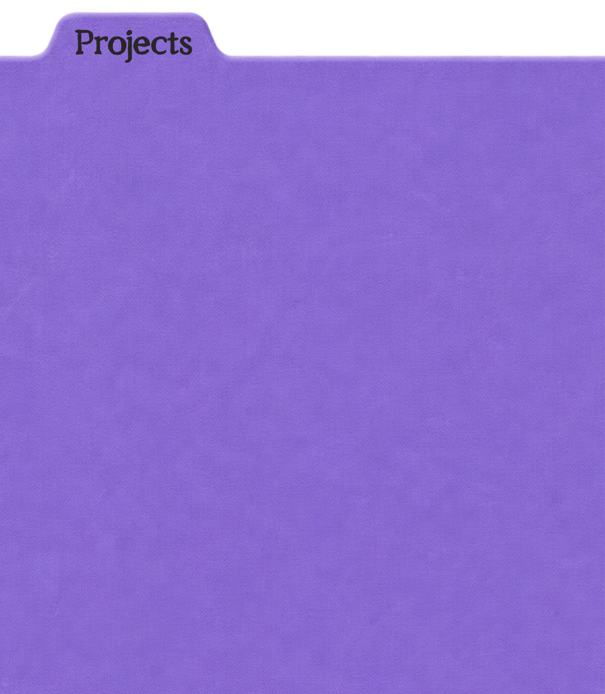
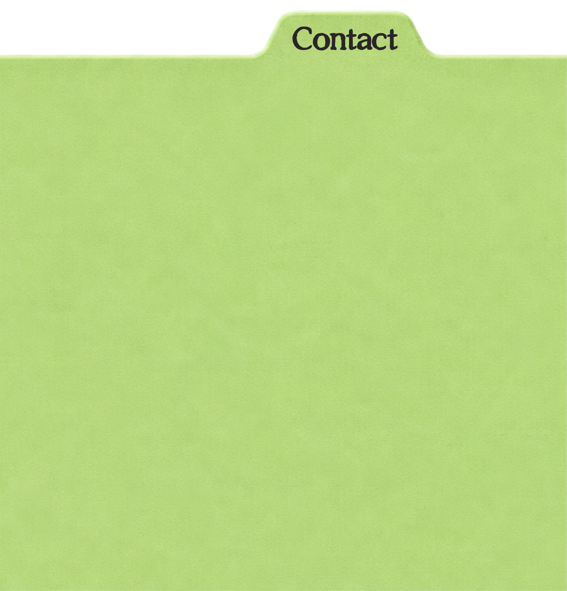
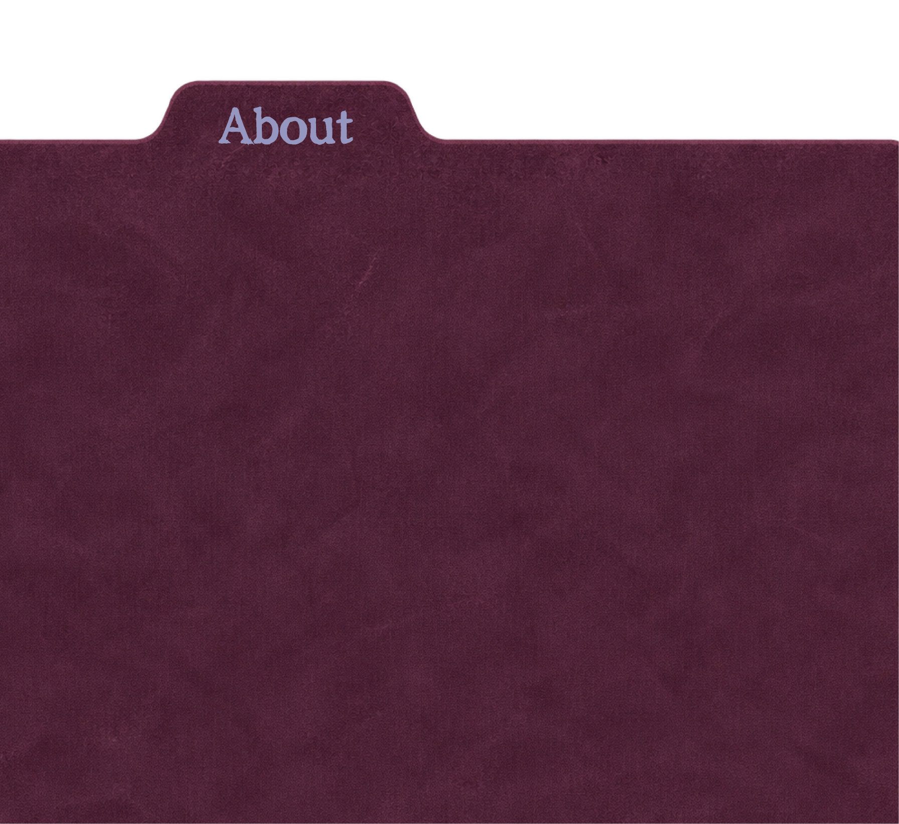
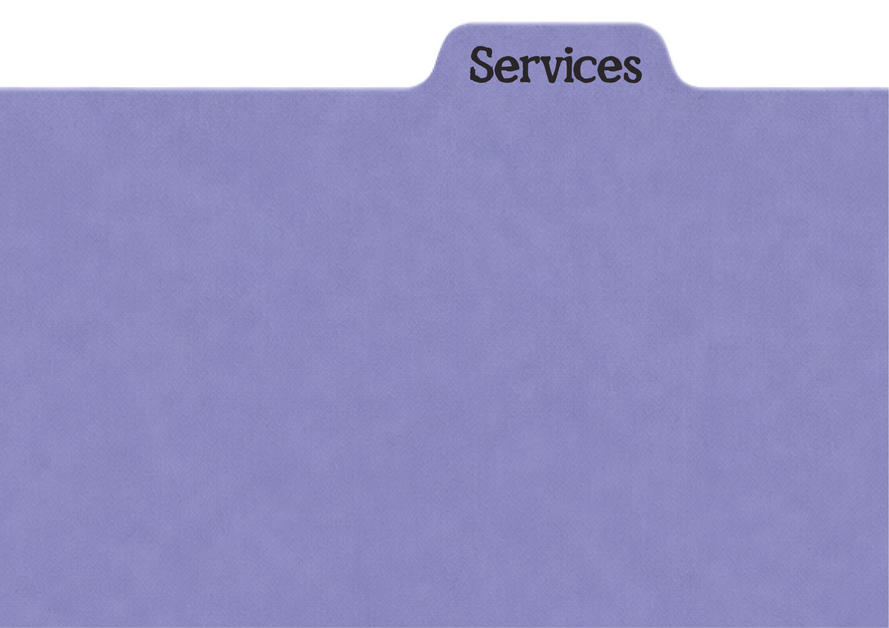
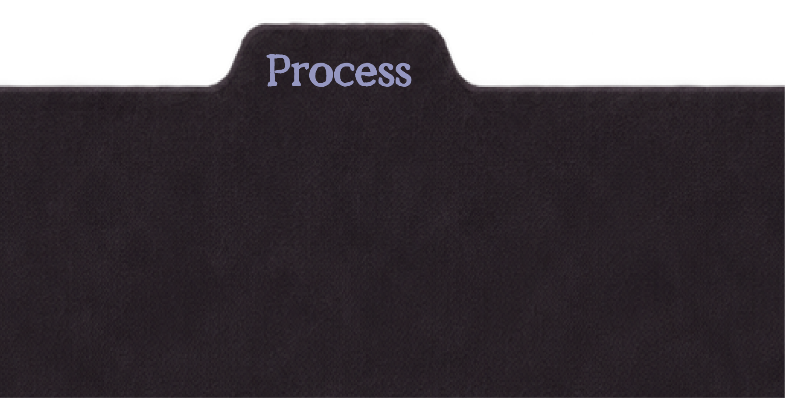

Client name — project type
One line on what changed: the before, the after, the shift in how they were understood.
Positioning





Selected work
One line on what changed: the before, the after, the shift in how they were understood.
PositioningOne line on what changed: the before, the after, the shift in how they were understood.
Brand voiceOne line on what changed: the before, the after, the shift in how they were understood.
LaunchTell me a little about what you're building — I read every message myself.
Or write straight to chapter@storybookstudio.com
I translate between what people make and how the world understands it.
Storybook Studio is run by Miren Arregui, who spent six years building other people's marketing before leaving to build her own practice.
She works with founders doing complex, personal, hard-to-summarize work — the kind that gets lost in translation between what someone makes and how the world is supposed to understand it.
How we might work together
Finding the true, specific version of what you do — and the language that makes it land.
Turning positioning into words you'll actually use — on the site, in the deck, in the DM.
A living reference so the story stays consistent after the project ends.
An honest conversation about what you make and who keeps misunderstanding it.
Your story, restructured into positioning that holds up under pressure.
Guidelines and messaging you can hand to anyone and trust they'll get it right.
Check-ins as things grow, so the narrative never falls out of date.